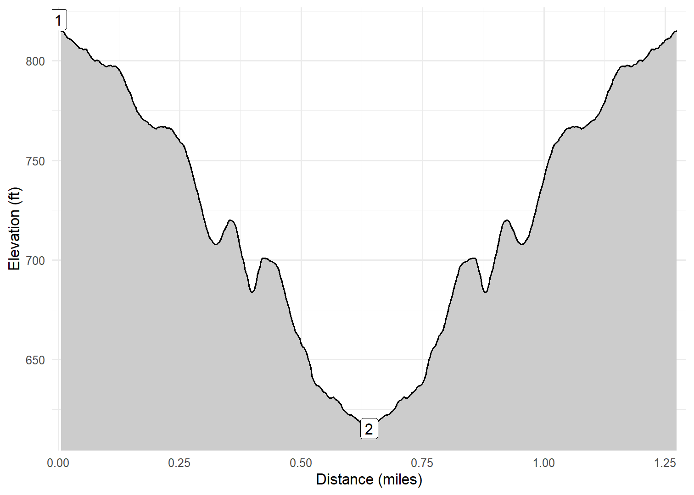

Kadunce River Trail
Kim, Cash and I stopped at the Kadunce River wayside and hiked the trail along the river until we reached the bridge across the river on the Superior Hiking Trail. This is a nice short trail that leads to the SHT, which we will probably explore further sometime. We did not take any pictures.
Walk-Specific Map
Take Note
- Click on a segment to get specific information.
- Numeric labels correspond to the same labels in the elevation profile and summary information below.
Elevation Profile

GPX Download
A sanitized GPX file of our hike is here.
Summary Information
| NUM | trackID | Primary | Description | Type | Distance | CumDist | DeltaElev |
|---|---|---|---|---|---|---|---|
| 1 | MNKDNC01 | Kadunce River trail | Hwy 61 to Superior Hiking Trail | Trail | 0.64 | 0.64 | 205 |